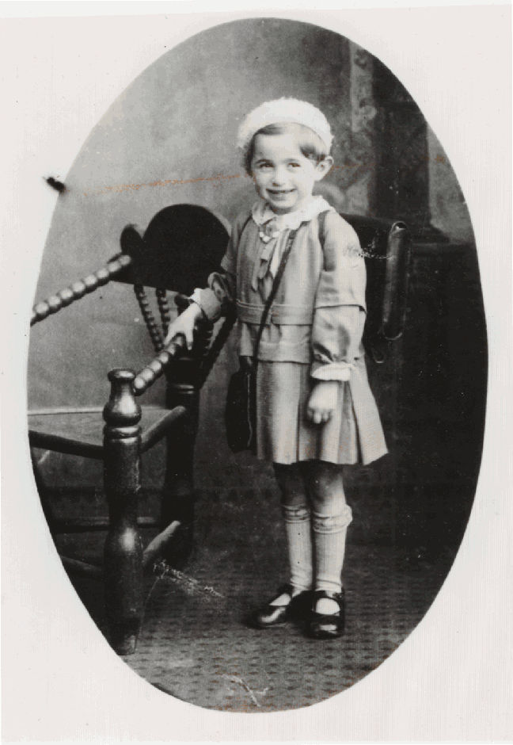
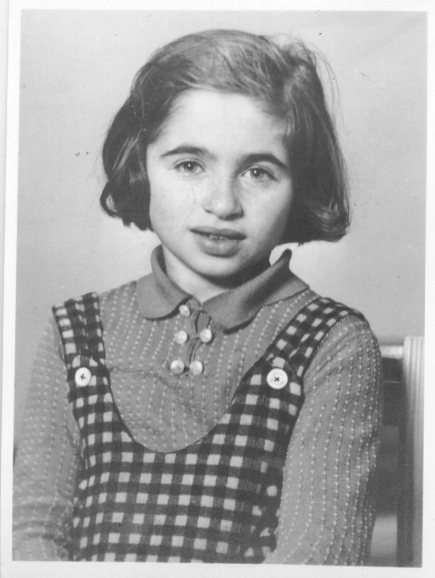
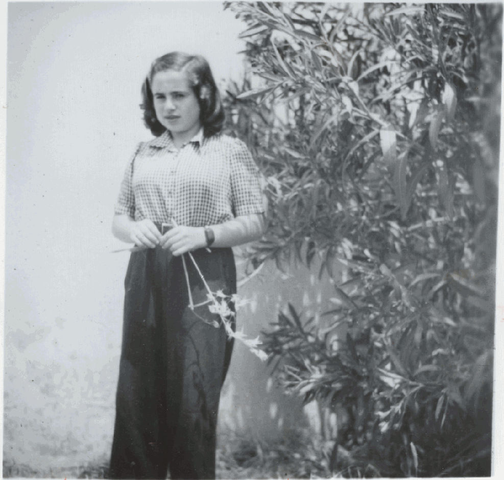
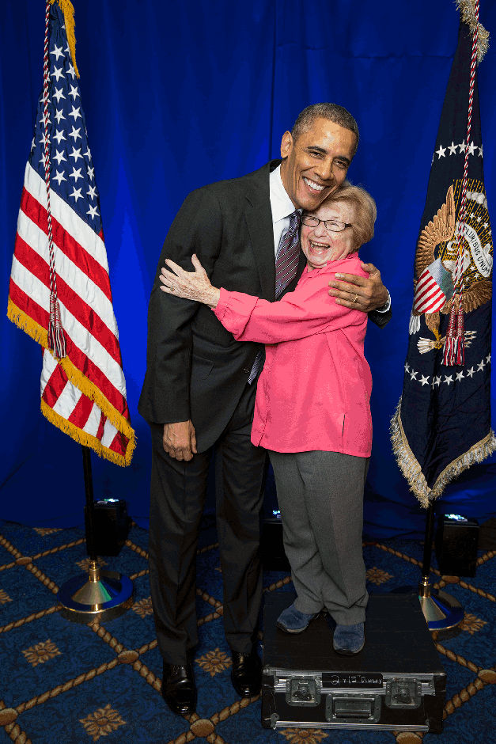

Irma, Julius und Karola Ruth Siegel, Anfang der 1930er Jahre in Wiesenfeld.
Karola Ruth Siegel, 1934, erster Schultag in der Samson-Raphael-Hirsch Schule in Frankfurt am Main.

Karola Ruth Siegel (mitte), Sommerlager Bad Nauheim, 1937/38.
Karola Ruth Siegel im Dezember 1938, wenige Tage vor der Abreise in die Schweiz.
Ruth K. Siegel, 1947 in Jerusalem.
Dr. Ruth K. Westheimer und der damalige US-Präsident Barack Obama, 26. April 2013.